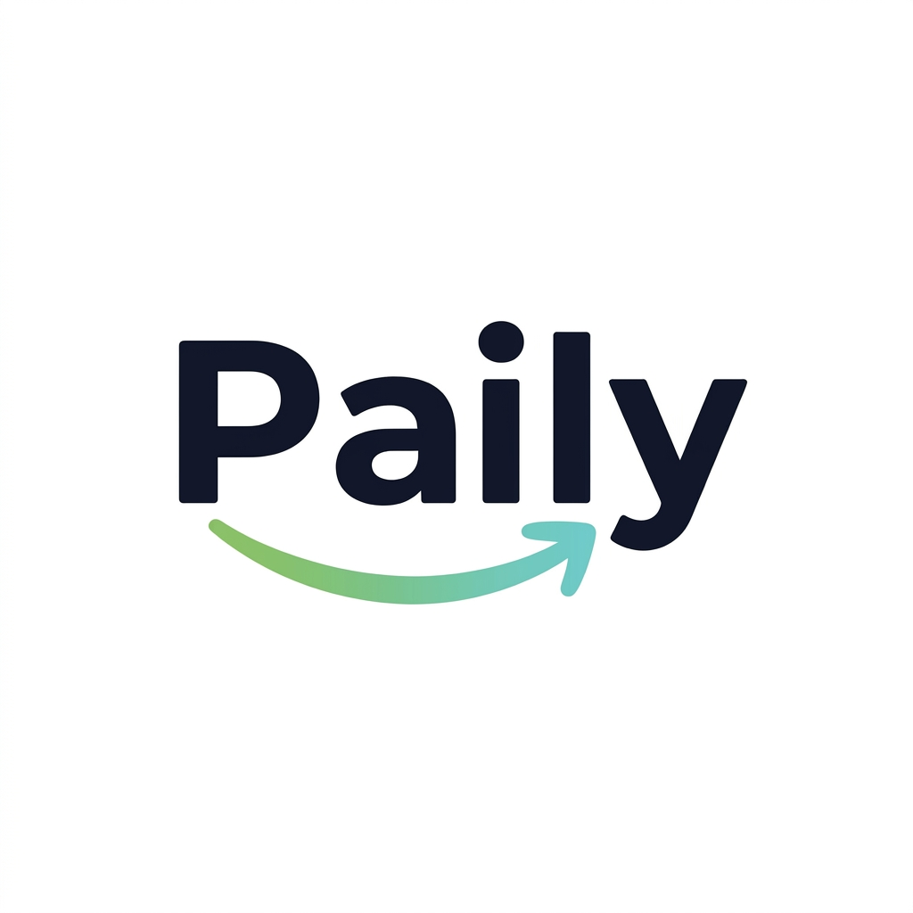

Experienced quality engineer creating measurable impact through proactive ownership and AI-powered automation.
At HSBC I lead quality initiatives across customer-facing products and design systems. In Paily I build a QR payments product for restaurants from idea to pilot readiness.
Senior Test Automation EngineerProactive QA leadershipPaily founder and builderTypeScriptPlaywrightCI/CDJava
Experience
Timeline of roles where I built automation foundations, improved release confidence, and drove QA ownership.
HSBC - Senior Test Automation Engineer
Since 01.03.2026 I have been expanding AI-supported QA across the delivery lifecycle, from requirements and documentation to day-to-day BAU.
QA SME within a sub-value stream of around 15 testers, supporting standards and execution.
Presented AI quality use cases to MD/C-level leadership; selected ideas became delivery initiatives.
Stepped into interim Product Owner ownership (3-4 week periods) for a team of 6 developers and 2 QAs when needed.
AI for QAFigma to DevPlaywrightRelease Quality
Paily / PAILY - Full-stack personal project
I design and build a multi-tenant QR payments platform for restaurants, currently in pilot preparation with real customer discovery and integration conversations.
Guest flow: QR scan, live bill view, split per person, tips, partial/full checkout, PDF receipt export.
Pilot preparation: integration discussions with Tpay and Dotykačka plus ongoing conversations with restaurant customers.
Core reliability: real-time multi-guest sync, item locking, backend source of truth for prices and settlement states.
Product work beyond coding: sales conversations, conference and startup meeting participation, UX reviews, and iterative feature planning.
Joined a mature project with no QA automation and helped build a scalable QA foundation across design systems, payments, and lending.
Introduced Playwright and built a full testing framework for the Design System.
Implemented CI/CD-supported automation, including visual checks in the developer pipeline for immediate feedback.
Coverage outcomes: M&S Cards around 90%, M&S Loans around 50%, and Design Libraries from 0% to 100% visual, 90% functional, and 100% accessibility coverage in about 1.5 years.
Owned release preparation, in-development QA, daily regression, production support, and performance testing for customer-facing banking journeys.
JavaCucumberRestAssuredPerformance Testing
FDM Group - Java Developer Trainee
Intensive engineering training and team software delivery from requirements to demo.
AQForm - Lab Technician and Electronics
Built precision habits through compliance testing, photometry and technical documentation.

Paily
A restaurant QR payments product I am building end to end, now in pilot preparation with real customer conversations and integration work.
Guest checkout
QR flow with live bill view, split bill, partial payments, tips and PDF receipt download.
Staff and admin
Operational portal for tables, menu, billing, onboarding and tenant management, with pilot integration discussions.
Billing and sync
Real-time guest synchronization, item locking, and backend control over price and settlement state.
Testing
Quality architecture with unit, integration, API and E2E coverage, plus performance and frontend quality checks.
Testing and quality
JUnit + Spring Boot integration tests for domain logic, security rules, limits and receipt flows.
Playwright API tests for endpoint contracts and backend flow coverage.
Playwright E2E flows for guest, staff and admin journeys.
Load and soak suites with HTML/JSON reporting plus frontend SEO/build quality checks.
Tech stack
Tools I use to ship reliable systems and automate quality at scale.